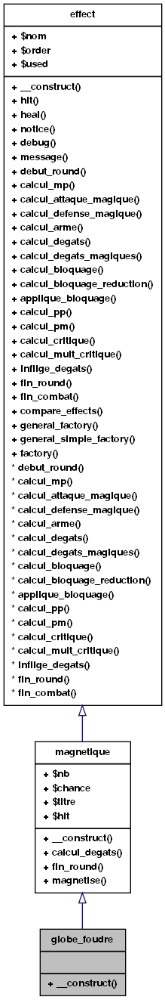

Page principale
Classes
Fichiers
Répertoires
Liste des classes
Index des classes
Hiérarchie des classes
Membres de classe
Référence de la classe globe_foudre
Graphe d'héritage de globe_foudre:

[
légende
]
Graphe de collaboration de globe_foudre:
[
légende
]
Liste de tous les membres
Fonctions membres publiques
__construct
($aNb, $achance, $aHit=false)
Documentation des constructeurs et destructeur
globe_foudre::__construct
(
$
aNb
,
$
achance
,
$
aHit
=
false
)
Voici le graphe d'appel pour cette fonction :
Généré le Mon Apr 25 23:17:23 2011 pour Starshine Online par
1.6.1
 1.6.1
1.6.1